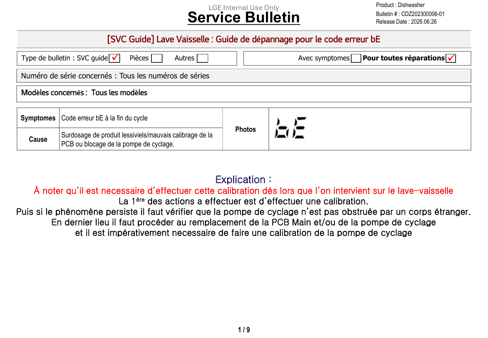

◒
Académie
FNAC DARTY
FNAC DARTY
E-LEARNING • BULLETIN SERVICE LG
Code erreur bE : diagnostic et calibrage
Identifier la cause, contrôler les éléments concernés et valider la réparation dans le bon ordre.
Lave-vaisselle LG • Bulletin CDZ202300006-01
Identifierles causes possibles
Diagnostiquerdans le bon ordre
Corrigerpuis valider la réparation

À retenir : Tous les modèles et tous les numéros de série sont concernés.
Afficher la voix off
Bonjour et bienvenue dans ce module consacré au dépannage du code erreur bE sur les lave-vaisselle LG. Ce défaut peut apparaître à la fin du cycle et avoir plusieurs origines. L’objectif est d’éviter le remplacement prématuré de composants en suivant une méthode de diagnostic précise.